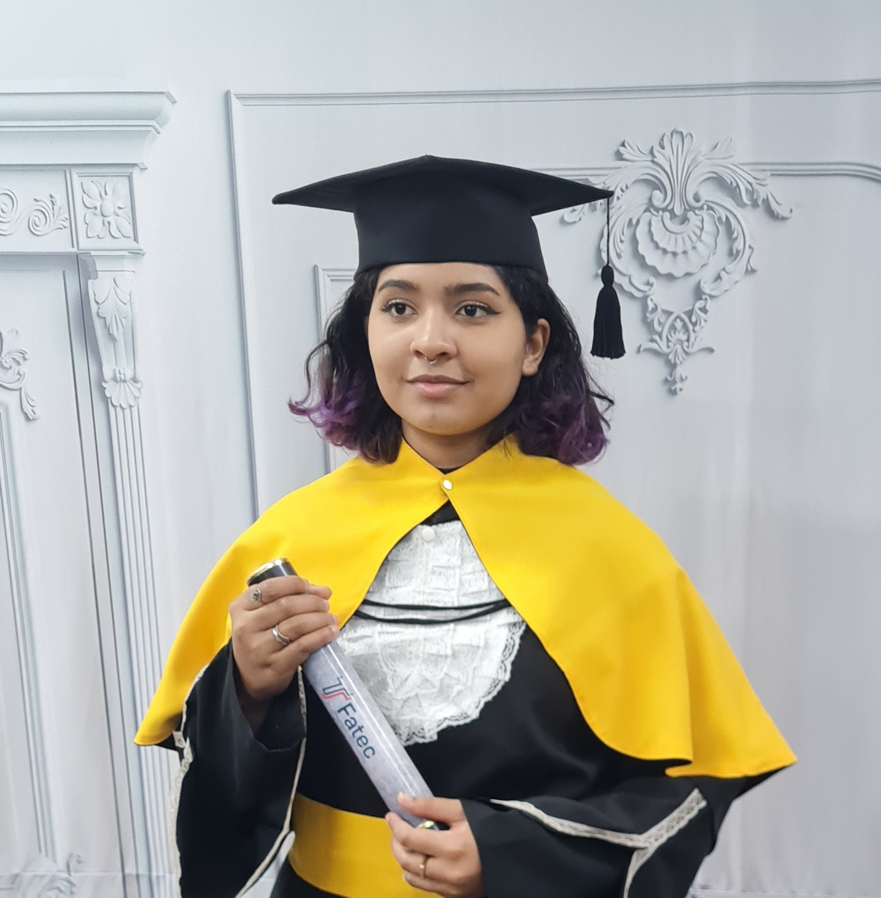

Sobre Mim

Me formei na Faculdade de Tecnologia de Presidente Prudente (FATEC) e sempre fui uma aluna dedicada, participando de diversas atividades extracurriculares. Tenho paixão por aprender coisas novas e me empenho ao máximo em cada desafio que assumo.
Ao longo da minha experiência profissional , desenvolvi habilidades de liderança que me permitem conduzir equipes com eficiência, respeito e colaboração.
Sou proativa e gosto de contribuir com ideias criativas e soluções inovadoras. Acredito que equipes fortes são construídas através do diálogo, confiança e aprendizado contínuo.
Minha formação inclui o curso de Análise e Desenvolvimento de Sistemas pela FATEC de Presidente Prudente . Estou constantemente buscando novos conhecimentos, certificações e experiências que contribuam para minha evolução profissional e pessoal.

Estou sempre aberta a novas oportunidades, conexões profissionais e projetos desafiadores. Se você compartilha interesses semelhantes ou deseja discutir uma possível colaboração, entre em contato. Vamos construir algo incrível juntos!